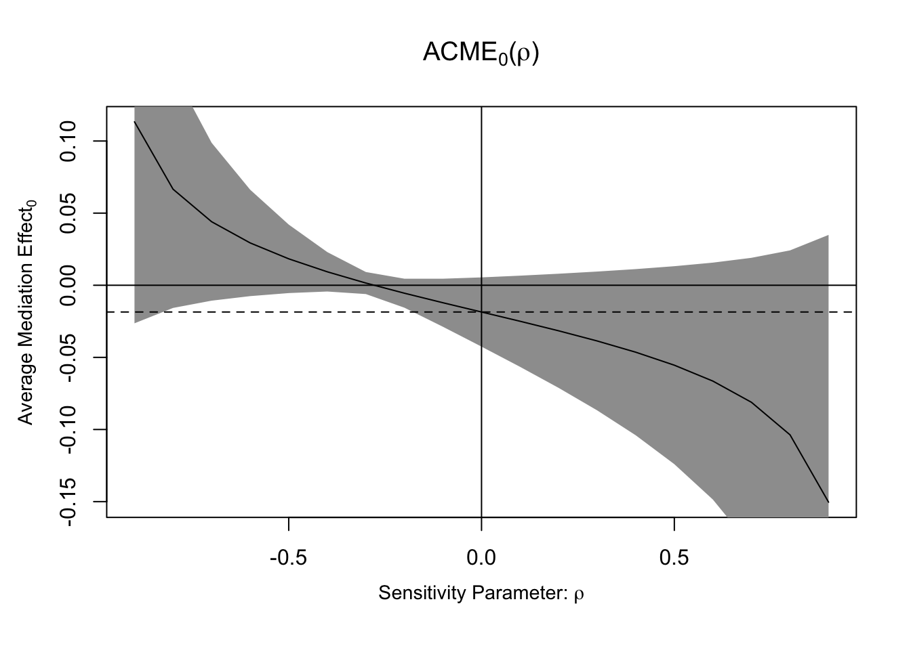
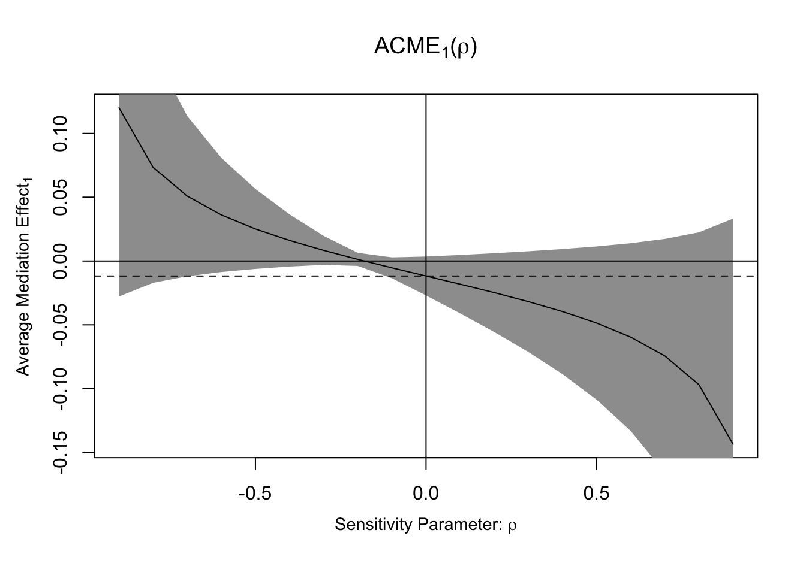

Mediation analysis is a key tool in causal inference, helping researchers understand how and why a treatment influences an outcome through an intermediate variable (mediator). In this tutorial, you’ll learn how to implement both traditional and causal mediation analysis in R using the mediation package, as well as explore structural equation modeling (SEM) with the lavaan package. By the end of this tutorial, you should be familiar with the following:
1. packages mediation and lavaan
2. Traditional mediation analysis
3. Causal mediation analysis
4. Structural equation modeling
Front-end Matters
The mediation and lavaan packages are essential tools for conducting mediation analysis and structural equation modeling (SEM) in R. The mediation package estimates direct and indirect effects under causal identification assumptions and provides tools for sensitivity analysis. The lavaan package enables flexible SEM modeling, handling multiple mediators and latent variables.
This is lavaan 0.7-2
lavaan is FREE software! Please report any bugs.
Traditional mediation analysis
In this section, we perform traditional mediation analysis using Baron and Kenny’s method. This approach involves a three-step regression process to assess whether the effect of an independent variable on an outcome is mediated through an intermediate variable.
In this tutorial, we examine whether self-esteem serves as a mediator in the relationship between grades and happiness. In this dataset, X represents grades, Y represents happiness, and M represents self-esteem.
X M Y
1 6 5 6
2 7 5 5
3 7 7 4
4 8 4 8
5 4 3 5
6 4 4 7
Step 1, we want X to affect Y. If there is no relationship between X and Y, there is nothing to mediate. Although this is what Baron and Kenny originally suggested, this step is controversial. Even if we don’t find a significant association between X and Y, we could move forward to the next step if we have a good theoretical background about their relationship.
step1 <-lm(Y ~ X, tradata)summary(step1)
Call:
lm(formula = Y ~ X, data = tradata)
Residuals:
Min 1Q Median 3Q Max
-5.0262 -1.2340 -0.3282 1.5583 5.1622
Coefficients:
Estimate Std. Error t value Pr(>|t|)
(Intercept) 2.8572 0.6932 4.122 7.88e-05 ***
X 0.3961 0.1112 3.564 0.000567 ***
---
Signif. codes: 0 '***' 0.001 '**' 0.01 '*' 0.05 '.' 0.1 ' ' 1
Residual standard error: 1.929 on 98 degrees of freedom
Multiple R-squared: 0.1147, Adjusted R-squared: 0.1057
F-statistic: 12.7 on 1 and 98 DF, p-value: 0.0005671
Since X has a significant impact on Y, we can move on to the next step: Step 2, we want X to affect M. If X and M have no relationship, M is just a third variable that may or may not be associated with Y. Under the Baron and Kenny approach, evidence that X predicts M is one of the required steps.
step2 <-lm(M ~ X, tradata)summary(step2)
Call:
lm(formula = M ~ X, data = tradata)
Residuals:
Min 1Q Median 3Q Max
-4.3046 -0.8656 0.1344 1.1344 4.6954
Coefficients:
Estimate Std. Error t value Pr(>|t|)
(Intercept) 1.49952 0.58920 2.545 0.0125 *
X 0.56102 0.09448 5.938 4.39e-08 ***
---
Signif. codes: 0 '***' 0.001 '**' 0.01 '*' 0.05 '.' 0.1 ' ' 1
Residual standard error: 1.639 on 98 degrees of freedom
Multiple R-squared: 0.2646, Adjusted R-squared: 0.2571
F-statistic: 35.26 on 1 and 98 DF, p-value: 4.391e-08
Since X has a significant impact on M, we can move on to the next step: Step 3, we want M to affect Y, but X to no longer affect Y (or X to still affect Y but in a smaller magnitude). Under the traditional approach, evidence for mediation was inferred when the effect of X on Y became smaller or disappeared after M was included. The effect of X on Y goes through M.
step3 <-lm(Y ~ X + M, tradata)summary(step3)
Call:
lm(formula = Y ~ X + M, data = tradata)
Residuals:
Min 1Q Median 3Q Max
-3.7631 -1.2393 0.0308 1.0832 4.0055
Coefficients:
Estimate Std. Error t value Pr(>|t|)
(Intercept) 1.9043 0.6055 3.145 0.0022 **
X 0.0396 0.1096 0.361 0.7187
M 0.6355 0.1005 6.321 7.92e-09 ***
---
Signif. codes: 0 '***' 0.001 '**' 0.01 '*' 0.05 '.' 0.1 ' ' 1
Residual standard error: 1.631 on 97 degrees of freedom
Multiple R-squared: 0.373, Adjusted R-squared: 0.3601
F-statistic: 28.85 on 2 and 97 DF, p-value: 1.471e-10
In the traditional terminology, if the effect of X on Y is no longer statistically significant after M is included, M is said to fully mediate the relationship between X and Y. If the effect of X on Y remains statistically significant but becomes smaller in magnitude, M is said to partially mediate the relationship. Under this traditional classification, the example shows full mediation.
Once we find these relationships, we want to see if this mediation effect is statistically significant. To do so, there are two main approaches: the Sobel test and bootstrapping.
Sobel test is a parametric test used to determine whether the indirect effect (a × b) is statistically significant. It uses the standard errors of a (X → M) and b (M → Y) to compute a Z-score, testing if the indirect effect is significantly different from zero. The Sobel test uses a normal approximation for the sampling distribution of the indirect effect, which can perform poorly when the indirect effect is skewed or the sample is small.
# Extract coefficients and standard errorsa <-coef(step2)["X"] # Effect of X on Mb <-coef(step3)["M"] # Effect of M on Ysa <-summary(step2)$coefficients["X", "Std. Error"] # SE of asb <-summary(step3)$coefficients["M", "Std. Error"] # SE of b# Sobel Test Calculationsobel_z <- (a * b) /sqrt((b^2* sa^2) + (a^2* sb^2))sobel_p <-2* (1-pnorm(abs(sobel_z))) # Two-tailed p-value# Print resultscat("Sobel Test Z-score:", sobel_z, "\n")
Sobel Test Z-score: 4.327891
cat("Sobel Test p-value:", sobel_p, "\n")
Sobel Test p-value: 1.505439e-05
Bootstrapping, in contrast, is a non-parametric method that repeatedly resamples the dataset to create an empirical distribution of the mediation effect. Instead of assuming normality, it estimates confidence intervals (CIs) from thousands of resamples. Bootstrapping does not rely on a normal approximation for the indirect effect and is generally preferred because the sampling distribution of the indirect effect is often non-normal.
#install.packages("boot")library(boot)# Define function to compute indirect effectindirect_effect <-function(data, indices) { d <- data[indices, ] # Resample data a <-coef(lm(M ~ X, data = d))["X"] b <-coef(lm(Y ~ X + M, data = d))["M"]return(a * b) # Indirect effect}# Perform bootstrappingset.seed(123)boot_results <-boot(data = tradata, statistic = indirect_effect, R =1000)# Print bootstrapped confidence intervalsboot.ci(boot_results, type ="perc")
BOOTSTRAP CONFIDENCE INTERVAL CALCULATIONS
Based on 1000 bootstrap replicates
CALL :
boot.ci(boot.out = boot_results, type = "perc")
Intervals :
Level Percentile
95% ( 0.2087, 0.5373 )
Calculations and Intervals on Original Scale
Both tests indicate a significant mediation effect. We conclude that there exists a positive indirect association between grades and happiness through self-esteem. This analysis alone does not establish that this mediation process is causal.
However, traditional mediation analysis has key limitations – it relies on correlational assumptions and does not explicitly model counterfactual outcomes. This means that while we observe a mediation effect, we cannot make strong causal claims about whether self-esteem truly transmits the effect of grades on happiness.
Causal mediation analysis
To address these limitations, we turn to causal mediation analysis, which is implemented in R using the mediation package. While the first steps look similar to Baron & Kenny’s approach—fitting regression models for the mediator and outcome—the mediate() function goes beyond simple associations by using a counterfactual framework to estimate the Average Causal Mediation Effect (ACME) and Average Direct Effect (ADE). This allows for a formal causal interpretation of mediation effects, assuming key assumptions hold.
The total effect in the summary is \(b_1\) in the first step: total effect of X on Y without M. The direct effect (ADE) is \(b_4\) in the third step: a direct effect of X on Y after taking into account the mediator effect of M. In this simple linear model without treatment–mediator interaction, the mediation effect (ACME) is the total effect minus the direct effect (\(b_1-b_4\)), which equals the product of a coefficient of X in the second step and a coefficient of M in the last step (\(b_2*b_3\)). The goal of mediation analysis is to estimate the indirect effect and assess its uncertainty. Using mediate() does not by itself make an analysis causal. A causal interpretation depends on the identification assumptions discussed in the lecture.
Let’s look into a more complicated model. We’re using job data in mediation package.
Model with covariates
We use the jobs data from mediation package. This dataset is from the Job Search Intervention Study. In this dataset, people in the treatment group participated in job-skills workshops (treat). The outcome variable is a continuous measure of depressive symptoms (depress2). A continuous measure of job-search self-efficacy represents a key mediating variable (job_seek). And we also have a list of covariates, including pre-treatment level of depression (depress1), education (educ), income, race(nonwhite), marital status (marital), age, sex, previous occupation (occp), and the level of economic hardship (econ_hard).
The estimated ACME is -0.0137, suggesting a negative indirect effect of the workshop on depressive symptoms through increased job-search self-efficacy. The effect is statistically significant at the 0.10 level
Sensitivity
We can quickly run a sensitivity analysis using the medsens() function from the mediation package. This will help assess how unmeasured confounding between the mediator (job_seek) and outcome (depress2) could affect your results.
ρ (rho) represents the correlation between the error terms of the mediator (job_seek) and the outcome (depress2) models that would arise if the no-unmeasured mediator–outcome confounding assumption were violated. ρ = -0.2 means that the residual correlation between the mediator and outcome models would need to be approximately -0.2 for the estimated ACME to reach zero. In this example, the estimated ACME reaches zero at approximately \(\rho=-0.2\). Whether this represents a plausible amount of unmeasured confounding depends on substantive knowledge.
The graph shows how the estimated ACME changes as \(\rho\) varies. If the ACME estimate does not change much across different rho values, it means that the mediation effect is not highly sensitive to hidden confounding. In contrast, if ACME drops to zero (or changes drastically) with a small shift in rho, it indicates that even a small amount of unmeasured confounding could invalidate the mediation effect.
Treatment–Mediator Interaction
We can allow the mediation effect to differ depending on treatment status. To do this, include an interaction between treatment and the mediator in the outcome model. Here, the model for the outcome must be altered by including an interaction term between the treatment indicator (treat) and the mediator variable (job_seek)
Now estimates for the mediation effects, direct effects and proportion of total effect mediated correspond to the levels of the treatment. In this case, the mediation effect under the treatment condition, listed as ACME (treated) is estimated to be −.012, while the mediation effect under the control condition, ACME (control), is −.019.
Both ACME estimates are negative and marginally statistically significant at the 0.10 level (p = .100 for both). The estimated indirect effect through job-search self-efficacy is -0.0185 under the control condition and -0.0117 under the treatment condition. This suggests a negative indirect effect of the treatment on depressive symptoms through job-search self-efficacy under both conditions. The point estimate is larger in absolute magnitude under the control condition. However, the difference in magnitude alone does not establish that the mediation effect significantly differs across treatment conditions.
When having a mediate object with interaction, we can select which treatment condition to plot the estimated effects for by selecting the treatment argument.
Mediation Sensitivity Analysis: Average Mediation Effect
Sensitivity Region: ACME for Control Group
Rho ACME(control) 95% CI Lower 95% CI Upper R^2_M*R^2_Y* R^2_M~R^2_Y~
[1,] -0.9 0.1133 -0.0264 0.2530 0.81 0.5279
[2,] -0.8 0.0666 -0.0157 0.1489 0.64 0.4171
[3,] -0.7 0.0441 -0.0107 0.0988 0.49 0.3194
[4,] -0.6 0.0294 -0.0075 0.0662 0.36 0.2346
[5,] -0.5 0.0183 -0.0054 0.0421 0.25 0.1629
[6,] -0.4 0.0093 -0.0043 0.0230 0.16 0.1043
[7,] -0.3 0.0015 -0.0061 0.0092 0.09 0.0587
[8,] -0.2 -0.0055 -0.0155 0.0045 0.04 0.0261
[9,] -0.1 -0.0121 -0.0288 0.0045 0.01 0.0065
[10,] 0.0 -0.0185 -0.0425 0.0055 0.00 0.0000
[11,] 0.1 -0.0250 -0.0566 0.0066 0.01 0.0065
[12,] 0.2 -0.0316 -0.0712 0.0080 0.04 0.0261
[13,] 0.3 -0.0386 -0.0868 0.0095 0.09 0.0587
[14,] 0.4 -0.0464 -0.1040 0.0112 0.16 0.1043
[15,] 0.5 -0.0554 -0.1240 0.0132 0.25 0.1629
[16,] 0.6 -0.0664 -0.1486 0.0157 0.36 0.2346
[17,] 0.7 -0.0811 -0.1813 0.0190 0.49 0.3194
[18,] 0.8 -0.1037 -0.2316 0.0242 0.64 0.4171
[19,] 0.9 -0.1504 -0.3357 0.0349 0.81 0.5279
Rho at which ACME for Control Group = 0: -0.3
R^2_M*R^2_Y* at which ACME for Control Group = 0: 0.09
R^2_M~R^2_Y~ at which ACME for Control Group = 0: 0.0587
Sensitivity Region: ACME for Treatment Group
Rho ACME(treated) 95% CI Lower 95% CI Upper R^2_M*R^2_Y* R^2_M~R^2_Y~
[1,] -0.9 0.1201 -0.0278 0.2681 0.81 0.5279
[2,] -0.8 0.0734 -0.0171 0.1639 0.64 0.4171
[3,] -0.7 0.0509 -0.0119 0.1137 0.49 0.3194
[4,] -0.6 0.0362 -0.0086 0.0809 0.36 0.2346
[5,] -0.5 0.0251 -0.0062 0.0564 0.25 0.1629
[6,] -0.4 0.0161 -0.0043 0.0366 0.16 0.1043
[7,] -0.3 0.0083 -0.0030 0.0197 0.09 0.0587
[8,] -0.2 0.0013 -0.0038 0.0064 0.04 0.0261
[9,] -0.1 -0.0053 -0.0135 0.0029 0.01 0.0065
[10,] 0.0 -0.0117 -0.0270 0.0035 0.00 0.0000
[11,] 0.1 -0.0182 -0.0410 0.0047 0.01 0.0065
[12,] 0.2 -0.0248 -0.0557 0.0061 0.04 0.0261
[13,] 0.3 -0.0318 -0.0713 0.0077 0.09 0.0587
[14,] 0.4 -0.0396 -0.0886 0.0094 0.16 0.1043
[15,] 0.5 -0.0486 -0.1087 0.0114 0.25 0.1629
[16,] 0.6 -0.0596 -0.1332 0.0139 0.36 0.2346
[17,] 0.7 -0.0743 -0.1660 0.0173 0.49 0.3194
[18,] 0.8 -0.0969 -0.2163 0.0225 0.64 0.4171
[19,] 0.9 -0.1436 -0.3204 0.0332 0.81 0.5279
Rho at which ACME for Treatment Group = 0: -0.2
R^2_M*R^2_Y* at which ACME for Treatment Group = 0: 0.04
R^2_M~R^2_Y~ at which ACME for Treatment Group = 0: 0.0261
plot(sens.out.2)


The mediation package is not limited to OLS models; it also supports mediation analysis for binary, ordinal, and other types of dependent variables, making it highly flexible for different study designs. For more details and documentation, visit the mediation package website.
Structural Equation Modeling (SEM)
Structural Equation Modeling (SEM) is a statistical framework for jointly modeling relationships among multiple observed and/or latent variables. It can be useful for complex mediation structures, but SEM itself does not establish causal identification. Unlike traditional mediation analysis, SEM enables researchers to simultaneously model multiple mediators, assess indirect and direct effects, and incorporate more flexible model specifications. In this tutorial, we focus on multiple mediation models, specifically parallel mediation (where separate mediated pathways are specified without a directed path between mediators) and sequential mediation (where mediators influence each other in a chain before affecting the outcome).
The data we are using is downloaded from here. Make sure you download the data before running the tutorial.
This data includes independent variable (mastery goal), outcome (achievement), and multiple mediating variables, such as interest and anxiety.
In parallel mediation, the model specifies separate mediated pathways without a directed path from one mediator to another. The mediators do not need to be statistically independent. Each mediator represents a separate pathway from the treatment to the outcome.
We first write down the model specifying all relationships. The indirect effects are defined to capture the mediation pathways: one through interest (mstr_int_achv = a × b) and another through anxiety (mstr_anxt_achv = c × d). The total effect combines all direct and indirect effects, allowing us to assess the full impact of mastery on achievement.
In lavaan, the := operator is used to define custom parameters based on existing model estimates. This is particularly useful in mediation analysis, where indirect effects need to be explicitly computed from path coefficients.
fit <-sem(model, data = SEMdata, se="bootstrap", bootstrap =1000)summary(fit, fit.measures = T, standardized = T, rsquare = T)
lavaan 0.7-2 ended normally after 1 iteration
Estimator ML
Optimization method NLMINB
Number of model parameters 8
Number of observations 140
Model Test User Model:
Test statistic 0.010
Degrees of freedom 1
P-value (Chi-square) 0.920
Model Test Baseline Model:
Test statistic 149.860
Degrees of freedom 6
P-value 0.000
User Model versus Baseline Model:
Comparative Fit Index (CFI) 1.000
Tucker-Lewis Index (TLI) 1.041
Loglikelihood and Information Criteria:
Loglikelihood user model (H0) -704.422
Loglikelihood unrestricted model (H1) -704.417
Akaike (AIC) 1424.844
Bayesian (BIC) 1448.377
Sample-size adjusted Bayesian (SABIC) 1423.066
Root Mean Square Error of Approximation:
RMSEA 0.000
90 Percent confidence interval - lower 0.000
90 Percent confidence interval - upper 0.082
P-value H_0: RMSEA <= 0.050 0.933
P-value H_0: RMSEA >= 0.080 0.051
Standardized Root Mean Square Residual:
SRMR 0.002
Goodness of Fit Index:
Goodness of Fit Index (GFI) 1.000
90 Percent confidence interval - lower 1.000
90 Percent confidence interval - upper 1.000
Parameter Estimates:
Standard errors Bootstrap
Number of requested bootstrap draws 1000
Number of successful bootstrap draws 1000
Regressions:
Estimate Std.Err z-value P(>|z|) Std.lv Std.all
achieve ~
interest (b) 0.211 0.072 2.933 0.003 0.211 0.294
anxiety (d) -0.040 0.056 -0.723 0.470 -0.040 -0.053
mastery (e) 0.345 0.096 3.592 0.000 0.345 0.379
interest ~
mastery (a) 0.770 0.083 9.310 0.000 0.770 0.607
anxiety ~
mastery (c) -0.399 0.090 -4.425 0.000 -0.399 -0.337
Variances:
Estimate Std.Err z-value P(>|z|) Std.lv Std.all
.achieve 0.988 0.101 9.741 0.000 0.988 0.613
.interest 1.973 0.229 8.606 0.000 1.973 0.631
.anxiety 2.415 0.211 11.444 0.000 2.415 0.886
R-Square:
Estimate
achieve 0.387
interest 0.369
anxiety 0.114
Defined Parameters:
Estimate Std.Err z-value P(>|z|) Std.lv Std.all
mstr_int_achv 0.162 0.057 2.858 0.004 0.162 0.178
mstr_anxt_achv 0.016 0.023 0.693 0.488 0.016 0.018
Total 0.524 0.067 7.782 0.000 0.524 0.575
Results indicate that mastery goal has a statistically significant indirect effect of 0.162 on achievement through interest (p = .004). The estimated indirect effect through anxiety is 0.016 and is not statistically significant (p = .488). The total effect of mastery goal on achievement is 0.524 and statistically significant (p < .001).
Sequential mediation
In sequential mediation, the model posits a causal ordering among mediators, such as X → M1 → M2 → Y. This ordering should be justified by theory, research design, and temporal ordering rather than inferred from the SEM results alone. Unlike parallel mediation, where no directed path is specified between the mediators, sequential mediation specifies a directional relationship between them. This allows researchers to explore how intermediate mechanisms unfold over time. For example, in an educational setting, mastery might first enhance interest, which then influences anxiety, ultimately affecting achievement.
In sequential mediation, we can estimate indirect effects through different pathways, including pathways that pass through multiple mediators. We may also define effects beginning with the first mediator if they are substantively useful.
lavaan 0.7-2 ended normally after 1 iteration
Estimator ML
Optimization method NLMINB
Number of model parameters 9
Number of observations 140
Model Test User Model:
Test statistic 0.000
Degrees of freedom 0
Parameter Estimates:
Standard errors Bootstrap
Number of requested bootstrap draws 1000
Number of successful bootstrap draws 1000
Regressions:
Estimate Std.Err z-value P(>|z|) Std.lv Std.all
achieve ~
anxiety (c) -0.040 0.056 -0.723 0.470 -0.040 -0.053
interest (e) 0.211 0.072 2.933 0.003 0.211 0.294
mastery (f) 0.345 0.096 3.592 0.000 0.345 0.379
interest ~
mastery (a) 0.770 0.083 9.310 0.000 0.770 0.607
anxiety ~
interest (b) 0.009 0.099 0.095 0.924 0.009 0.010
mastery (d) -0.406 0.116 -3.508 0.000 -0.406 -0.343
Variances:
Estimate Std.Err z-value P(>|z|) Std.lv Std.all
.achieve 0.988 0.101 9.741 0.000 0.988 0.613
.interest 1.973 0.229 8.606 0.000 1.973 0.631
.anxiety 2.415 0.212 11.382 0.000 2.415 0.886
R-Square:
Estimate
achieve 0.387
interest 0.369
anxiety 0.114
Defined Parameters:
Estimate Std.Err z-value P(>|z|) Std.lv Std.all
mstr_nt_nxt_ch -0.000 0.006 -0.052 0.958 -0.000 -0.000
mstr_int_achv 0.162 0.057 2.858 0.004 0.162 0.178
mstr_anxt_achv 0.016 0.023 0.701 0.483 0.016 0.018
int_anxt_achv -0.000 0.007 -0.053 0.958 -0.000 -0.001
total_mstr 0.524 0.067 7.782 0.000 0.524 0.575
total_int 0.211 0.071 2.953 0.003 0.211 0.293
Results indicate three possible indirect pathways from mastery goal to achievement. The indirect effect through interest alone (mastery → interest → achievement) is 0.162 and statistically significant (p = .004). The indirect effect through anxiety alone (mastery → anxiety → achievement) is 0.016 and is not statistically significant (p = .483). The sequential indirect effect through interest and then anxiety (mastery → interest → anxiety → achievement) is approximately 0.000 and is not statistically significant (p = .958). The total effect of mastery goal on achievement is 0.524 and statistically significant (p < .001). Overall, the mediation effect in this model operates primarily through interest, rather than through anxiety or the sequential interest–anxiety pathway.
Conclusion
In this tutorial, we explored several approaches to mediation analysis. We began with the traditional Baron and Kenny approach, then introduced causal mediation analysis using the mediation package to estimate direct and indirect effects within a counterfactual framework. We also used sensitivity analysis and examined treatment–mediator interaction. Finally, we applied Structural Equation Modeling (SEM) to parallel and sequential mediation models. SEM provides a flexible framework for modeling multiple pathways, but causal interpretation still depends on the underlying research design and identification assumptions.